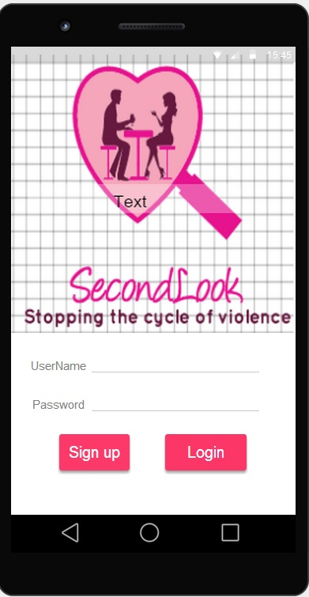
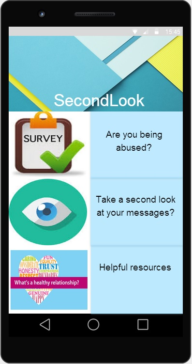

SecondLook


1 in 3 women in the U.S is a victim of dating related abuse and violence and 30% of the women in college have reported dating violence. These alarming numbers show the severity of the problem. Today's generation communicates primarily through digital media, and this project aims to understand the feasibility of using technology in detecting digital dating abuse. Our application is called SecondLook, which uses supervised machine learning techniques to classify text as abusive or non-abusive.
Related Publications
[Peer Reviewed Publications] - Roy, T., McClendon, J., Daily, S.B., Hodges, L.F. (2016). SecondLook: Participatory design process to create a phone app that detects digital dating abuse. Proceedings of the International Conference on Healthcare Informatics, Chicago, Ill., (Pages 320-327). (Clemson)
Peer Reviewed
1. Roy, T., Hodges, L.F., Neffati,F*. (2022) Understanding user perception and trust when results from a dating abuse detection application are displayed. In International Conference on Human-Computer Interaction (Accepted to be published in July 2022) Springer, Cham. (NCF)
2. Roy, T., Young E*., Hodges, L.F. (2020). A second look at SecondLook: Design Iterations and Usability of Digital Dating Abuse Detection and Awareness App . Proceedings of the IEEE International Conference on Healthcare Informatics, Dec 2020.IEEE, (pp. 1-11) (NCF)
3. Velosa,L.*, Roy, T (2022). SecondLook: Recreating the User Interface of a Digital Dating Abuse Detection phone app & building a secure back-end. Student research competition at 2022 Consortium for Computing Sciences in Colleges: Southeastern regional conference (Poster Accepted). (NCF)
Poster and Presentations
- Roy, T., Hodges, L. F., McClendon, J. (2016). Participatory design process of creating a phone application that detects digital dating abuse. Poster presented at Carolina’s Women in Computing Conference (CWIC2016). (February 19 -20, Myrtle Beach, SC). (Clemson)
- Roy, T., Hodges, L. F.(2016). Understanding the feasibility of using participatory design process to build phone application that detects digital dating abuse. Poster accepted at Grace Hopper Women in Computing 2016. (Clemson)
- Roy, T., Hodges, L. F.(2016). Detecting digital dating abuse using machine learning techniques. To be presented in the Doctoral Consortium at ACM Richard Tapia Celebration of Diversity in Computing Conference. (September 15 – 18. Austin, TX). (Clemson)
-Team
Dr. Larry F. Hodges, Dr. Jerome McClendon, and Dr. S.B.Daily
-Skills
Android application development, text mining, data corpus creation, paper prototyping, experiment design and data analysis.